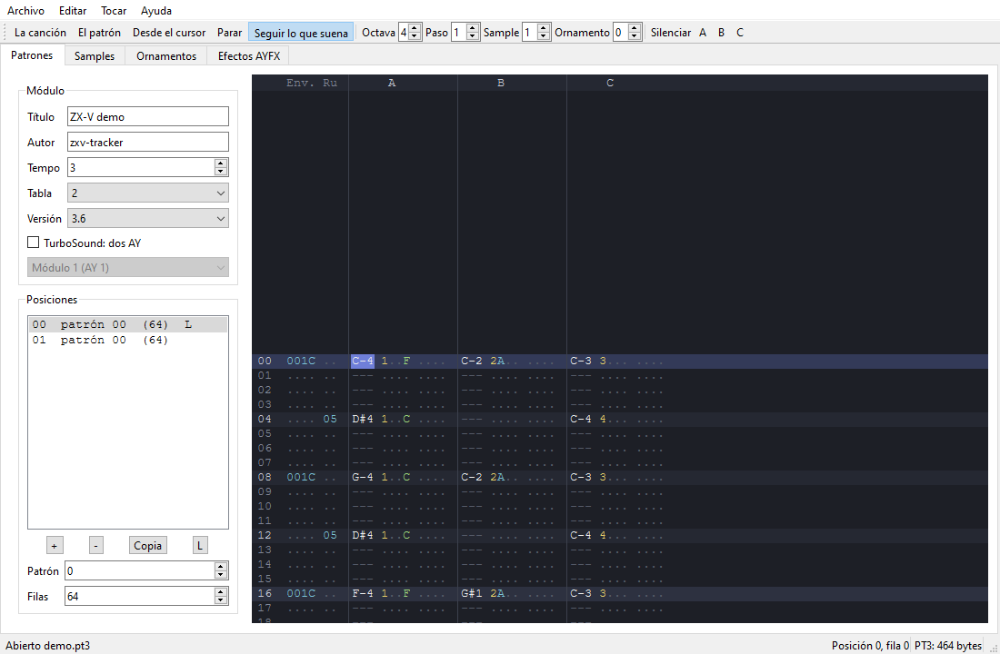

Programas nativos (SDK)
Un programa nativo (.zxv) es un programa escrito en C o en
ensamblador RISC-V y compilado para el procesador de la propia máquina.
Funciona a toda velocidad, tiene la máquina entera para él y puede hacer
todo lo que hace el BASIC y más: juegos con decenas de sprites, sonido
digitalizado, tus propios formatos de fichero.
Esta guía te lleva desde instalar las herramientas hasta distribuir un programa terminado. La lista completa de funciones, constantes y formatos está en la referencia de la API, y el motor gráfico tiene su propia página: Gráficos.
Contenido
- ¿Programa nativo o BASIC?
- Instalar las herramientas
- Compilar y ejecutar los ejemplos
- Tu primer programa
- Cómo funciona un programa
- La pantalla, los colores y el texto
- Gráficos: dibujo, sprites y mapas de tiles
- Sonido
- Teclado, mando y ratón
- Ficheros en la tarjeta SD
- El tiempo y el bucle de frames
- Programar en ensamblador
- Depurar
- Distribuir tu programa
¿Programa nativo o BASIC?
Usa el BASIC cuando quieras probar ideas deprisa, aprender o escribir programas que sean sobre todo texto, menús o juegos sencillos. El BASIC de ZX-V ya tiene sprites, mapas de tiles, sonido y ficheros, y cambias una línea y lo vuelves a ejecutar en un segundo.
Usa un programa nativo cuando necesites:
- Velocidad. El C va muchas veces más rápido que el BASIC: la CPU hace unos 2,4 millones de instrucciones por frame (60 frames por segundo).
- Control. Tus propias estructuras de datos, aritmética de coma fija, tu propio motor de sonido, tus propios formatos de fichero.
- Espacio. Casi 248 KB para código y datos, con toda la memoria de la máquina a tu disposición mientras el programa funciona.
A cambio, escribes en C en tu ordenador, compilas y luego cargas el resultado en la máquina o en el emulador. Mucha gente combina las dos cosas: prueba una idea en BASIC y luego escribe el juego terminado en C.
Hay una tercera vía: compilar BASIC con ZX Basic, que
convierte un programa en BASIC en un .zxv unas 90 veces más rápido que en
el BASIC de la máquina.
Si conoces el Spectrum: un .zxv es como un programa en código
máquina cargado con LOAD "" CODE y arrancado con RANDOMIZE USR, pero en
C, con un procesador de 32 bits y una biblioteca de rutinas del sistema a
las que llamas como a funciones normales de C.
Instalar las herramientas
Necesitas tres cosas:
- Un compilador cruzado GCC para RISC-V (
riscv64-unknown-elf-gcc). Aunque lleve «64» en el nombre, también genera el código de 32 bits que usa ZX-V. - Python 3, para las herramientas que convierten el programa
compilado en un
.zxvy las imágenes en gráficos. - El SDK: la carpeta
sdkdel repositorio de ZX-V. Clona o descarga el repositorio; las órdenes de esta guía se ejecutan desde su carpeta principal.
Opcionalmente:
- picolibc, la biblioteca estándar de C para máquinas pequeñas, si
quieres
printf,fopen,mallocy compañía (ver Dos formas de escribir en C). - GDB para RISC-V, para depurar con puntos de ruptura (ver Depurar).
- El emulador, para ejecutar tus programas en tu ordenador (ver
El emulador). La versión sin ventana,
zxv-cli, viene muy bien para pruebas rápidas y automáticas.
Linux (Debian, Ubuntu)
sudo apt install gcc-riscv64-unknown-elf picolibc-riscv64-unknown-elf python3 make
# opcional, para depurar:
sudo apt install gdb-multiarch
Son los paquetes que usan las compilaciones automáticas del proyecto en Ubuntu 24.04.
Windows
Instala MSYS2 y, en su terminal UCRT64:
pacman -S mingw-w64-ucrt-x86_64-riscv64-unknown-elf-toolchain \
mingw-w64-ucrt-x86_64-python make
# opcional, para depurar:
pacman -S mingw-w64-ucrt-x86_64-gdb-multiarch
Ejecuta las órdenes de esta guía en esa misma terminal. MSYS2 no tiene
paquete de picolibc, así que en Windows puedes compilar todos los ejemplos
menos files y escribir programas sin la biblioteca estándar de C (lo
normal: todos los demás ejemplos, incluido el juego Estela, son así).
macOS
Todavía no hay una receta probada para macOS. El paquete riscv64-elf-gcc
de Homebrew debería servir si trae las bibliotecas de 32 bits ilp32; sus
órdenes empiezan por riscv64-elf- en vez de riscv64-unknown-elf-, así
que compila con make -C sdk CROSS=riscv64-elf-.
Comprobar la instalación
riscv64-unknown-elf-gcc --version
python3 --version
Compilar y ejecutar los ejemplos
Desde la carpeta principal del repositorio:
make -C sdk
Compila todos los ejemplos de sdk/examples/ y deja los programas en
sdk/build/: hello.zxv, graphics.zxv, estela.zxv, etc. (y junto a cada
uno, el .elf con la información para depurar). Sin picolibc (MSYS2, en
Windows, no la tiene), make lo dice y compila los demás, sin files.
| Ejemplo | Qué enseña |
|---|---|
hello |
Los primeros pasos: texto con las rutinas del sistema, dibujo directo en la memoria de vídeo y una nota en el chip de sonido |
graphics |
El motor gráfico: un mapa de tiles que se desplaza, sprites que rebotan y chocan, un polígono que gira y un suelo en «modo 7» con sprites escalados, todo con doble buffer |
scroll |
Scroll por hardware sobre un campo de 1024 píxeles de ancho, dibujando solo la columna que entra, y parallax con la tabla por línea |
digital |
Sonido digitalizado: muestras a 8 kHz por el volumen de un canal del chip de sonido |
files |
La biblioteca estándar de C con la tarjeta SD: fopen, fprintf, fgets, opendir, malloc... (necesita picolibc) |
boardtest |
La prueba de la placa: OUT_INFO (la salida y el monitor), el reloj, un fichero escrito y leído, el teclado, los mandos y el ratón en vivo, los canales del AY en estéreo y, con P, las paletas con la tabla por línea |
estela |
Estela, un matamarcianos completo: tres fases, jefes, música y efectos con los dos chips de sonido, teclado y mando, récord en la tarjeta; sus gráficos (.gfx) y sus músicas (.pt3) se cambian sin compilar (su README) |
route128 |
Route 128, un juego de carreras: una carretera en pseudo-3D con curvas y cambios de rasante, pintada línea a línea, y el paisaje y el tráfico con sprites escalados; tres etapas contra el reloj; sus gráficos (.gfx) y sus músicas (.pt3) se cambian sin compilar (su README) |
mine |
The Mine, un juego de cavar: piedras y diamantes que caen y ruedan, bichos que siguen las paredes, musgo que crece y doce cuevas más grandes que la pantalla, con scroll suave; las reglas, aparte, se prueban también en el PC (su README) |
street |
Street Justice, un juego de peleas por las calles: luchadores dibujados con el motor a partir de un esqueleto en poses, profundidad, agarres, matones que se turnan para atacar y un jefe en cada una de las tres fases (su README) |
umbra |
Umbra, un laberinto en 3D a oscuras: paredes por raycasting, suelo y techo con el modo 7, la niebla de la lámpara y sombras que te persiguen; sus niveles son mapas de umbra.gfx |
keep |
The Keep, una aventura de mazmorras vista desde arriba: cuatro plantas de salas, enemigos, llaves, tesoros y un hechicero; sus plantas son mapas de keep.gfx, y la música y los efectos, ficheros que se editan |
chess |
ZXV Chess, ajedrez contra la máquina, con cuatro niveles, o entre dos: todas las reglas de la FIDE salvo la triple repetición, ratón, y el motor aparte, que se prueba también en el PC; las piezas son imágenes PNG que se editan (su README) |
gonesilent |
Gone Silent, una aventura en 3D: polígonos sólidos sombreados con tramas y dibujados de atrás adelante, sprites de pixel art para las criaturas y los objetos (hechos con scripts y comprimidos al compilar), dos paletas por la tabla por línea, un sensor de movimiento, un mapa y la partida guardada (su README) |
player |
Música y efectos con la biblioteca zxv_music.h: un reproductor de módulos PT3, TurboSound, PT2, STC, ASC y PSG y de bancos de efectos AYFX, con los registros de los dos AY a la vista |
gfxedit |
El editor de gráficos: sprites, tiles, mapas y texturas en ficheros .gfx, con el ratón (en la guía de gráficos) |
Para ejecutar uno, el .zxv tiene que estar en la tarjeta SD de la
máquina:
- En el emulador de escritorio (
zxv), abre el fichero con Archivo > Abrir (Alt+O) o arrástralo a la ventana. El emulador ofrece copiarlo a la tarjeta y lo carga. - En cualquier emulador o en la máquina real, copia el
.zxva la tarjeta SD (en el emulador de escritorio, la tarjeta es la carpetaZX-Vde tus Documentos) y escribe en el BASIC:
LOAD "graphics"
La extensión .zxv es opcional. En la versión web, sube antes el fichero
con Archivo > La tarjeta SD.
Los ejemplos vienen también dentro de la máquina, en la unidad ROM::
LOAD "ROM:graphics" funciona en una máquina recién encendida sin copiar
nada.
Tu primer programa
Crea una carpeta para tu programa, junto al repositorio o donde quieras, y
guarda esto como hello.c:
#include "zxv_api.h"
int main(void)
{
zxv_cls(7); /* borra la pantalla en blanco */
zxv_print_str("Hola desde C!\n");
zxv_print_str("Pulsa una tecla para volver al BASIC.");
for (int x = 0; x < 256; x++) /* una línea roja de lado a lado */
zxv_plot(x, 100, 2);
while (zxv_key_get() < 0) /* espera una tecla... */
zxv_wait_vblank(); /* ...frame a frame */
return 0;
}
Compílalo (cambia SDK por donde esté la carpeta sdk):
SDK=../ZX-V/sdk
riscv64-unknown-elf-gcc -march=rv32imac_zicsr_zifencei_zba_zbb_zbs_zbkb_zcb -mabi=ilp32 \
-Os -g -Wall -Wextra -std=gnu11 -ffreestanding -fno-builtin \
-fno-tree-loop-distribute-patterns -I$SDK/include \
-nostdlib -nostartfiles -static -T $SDK/zxv.ld -Wl,--gc-sections \
-Wl,--no-warn-rwx-segments \
$SDK/crt0.S $SDK/zxvlib.c hello.c -lgcc -o hello.elf
python3 $SDK/tools/elf2zxv.py hello.elf hello.zxv
La primera orden compila y enlaza tu programa para el procesador de ZX-V
en hello.elf. La segunda lo convierte en hello.zxv, el fichero que
carga la máquina. Copia hello.zxv a la tarjeta SD y escribe
LOAD "hello":
zxv_cls(7)borra la pantalla con el color 7 (blanco).zxv_print_strescribe texto en el cursor de texto, que empieza arriba a la izquierda;\npasa a la línea siguiente.zxv_plot(x, y, color)pinta un píxel. La pantalla mide 256 × 192 píxeles, con el (0, 0) arriba a la izquierda.zxv_key_get()devuelve la siguiente tecla pulsada, o −1 si no hay ninguna.zxv_wait_vblank()espera al siguiente frame (1/60 de segundo) para que el bucle no dé vueltas en vano.- Cuando
maindevuelve 0, estás otra vez en el BASIC con el informe0 OK.
Un Makefile para tu proyecto
Escribir esas órdenes cada vez cansa. Este Makefile lo hace por ti
(make compila, make clean borra lo compilado):
# Dónde está el SDK de ZX-V (la carpeta sdk del repositorio).
SDK ?= ../ZX-V/sdk
CROSS ?= riscv64-unknown-elf-
PYTHON ?= python3
NAME := hello
SOURCES := hello.c
CFLAGS := -march=rv32imac_zicsr_zifencei_zba_zbb_zbs_zbkb_zcb -mabi=ilp32 \
-Os -g -Wall -Wextra -std=gnu11 -ffreestanding -fno-builtin \
-fno-tree-loop-distribute-patterns -I$(SDK)/include
LDFLAGS := -nostdlib -nostartfiles -static -T $(SDK)/zxv.ld -Wl,--gc-sections \
-Wl,--no-warn-rwx-segments
$(NAME).zxv: $(NAME).elf
$(PYTHON) $(SDK)/tools/elf2zxv.py $< $@
$(NAME).elf: $(SOURCES) $(SDK)/crt0.S $(SDK)/zxvlib.c
$(CROSS)gcc $(CFLAGS) $(LDFLAGS) $(SDK)/crt0.S $(SDK)/zxvlib.c $(SOURCES) -lgcc -o $@
clean:
rm -f $(NAME).elf $(NAME).zxv
Añade tus otros ficheros .c a SOURCES. Las líneas de las órdenes
tienen que empezar con un tabulador, no con espacios.
Cómo funciona un programa
De LOAD a main
Cuando escribes LOAD "hello", la máquina:
- lee el
.zxvy lo comprueba (una firma y una suma de control, así que nunca ejecuta un fichero dañado); - copia el programa al principio de la RAM de usuario (la dirección
0x2003_4000) y pone a cero sus variables sin valor inicial; - pone el modo de vídeo que diga el fichero (el 0, salvo que elijas otro: ver Distribuir) y borra la pantalla (o deja la pantalla de carga, si el programa trae una de su modo);
- salta a
crt0.S, el trocito de código de arranque que añade el SDK, que llama a tumain.
Tu programa usa la pila que ya usaba el sistema, en lo alto de la RAM de usuario, y crece hacia abajo desde ahí.
Volver al BASIC
Hay dos formas de terminar:
- Volver de
main. - Llamar a
zxv_exit_to_basic(código)desde cualquier sitio, por muy dentro que estés.
El número que devuelves (o que pasas como código) le dice al BASIC cómo ha
ido. El 0 significa que todo ha ido bien: el BASIC enseña 0 OK, 0:1.
Cualquier otro número es un error, y el BASIC lo enseña en un informe W:
W Error en el código nativo (3), 0:1. Para explicar el error con palabras,
termina con zxv_report_error(código, mensaje): el BASIC enseña tu
mensaje en vez del suyo, seguido del código si no es 0.
if (zxv_file_load("nivel1.dat", nivel, sizeof(nivel)) < 0)
zxv_report_error(1, "No puedo cargar nivel1.dat"); /* W No puedo cargar nivel1.dat (1), 0:1 */
En todos los casos la memoria del programa vuelve a ser del BASIC, así que el programa BASIC que hubiera en memoria se pierde. El BASIC también deja la pantalla como siempre (página 0, modo 0, sin scroll) y calla los chips de sonido, pero es de buena educación dejarlo todo recogido tú mismo.
Si tu programa falla (por ejemplo, lee de una dirección prohibida), la
máquina también vuelve al BASIC, con el informe
W Error en el código nativo, 0:1. Ctrl+Alt+Supr para un programa que
se ha colgado, con L BREAK en el programa, 0:1.
Un programa nativo no puede lanzar otro: todos los programas se cargan en
la misma dirección, así que zxv_exec devuelve ZXV_E_ACCESS cuando la
llama un .zxv. Solo el BASIC lanza programas.
La memoria
| Zona | Dirección | Tamaño | Uso |
|---|---|---|---|
| RAM de usuario | 0x2003_4000 – 0x2007_1FFF |
248 KB | Tu código, tus datos y la pila |
| Página de vídeo 0 | 0x2000_4000 |
96 KB | La pantalla (ver gráficos) |
| Página de vídeo 1 | 0x2001_C000 |
96 KB | Una segunda pantalla, para el doble buffer |
| Área de sistema | 0x2000_0000 |
16 KB | Registros de pantalla, sonido y entrada; variables del sistema |
| ROM | 0x1004_0000 |
512 KB | El BASIC y las rutinas del sistema (solo lectura) |
- El programa y sus variables van abajo en la RAM de usuario, y la pila arriba. Deja sitio a la pila: el sistema solo comprueba que quedan 4 KB libres al cargar el programa. 32 KB, lo que deja picolibc, es una cantidad cómoda.
- En el modo 0 cada página de vídeo solo enseña sus primeros 24 KB; los otros 72 KB de cada página son RAM libre si te falta sitio (salvo que uses los campos de scroll grandes de gráficos).
- Los 64 KB que hay encima de la RAM de usuario son del sistema: tocarlos detiene tu programa.
Las reglas de la máquina
El mismo programa tiene que funcionar en el emulador y en la máquina real. Para eso:
- Usa solo las rutinas del sistema (la API), los registros de ZX-V y la memoria. El chip con el que está hecho ZX-V tiene otros periféricos (temporizadores, DMA...); no forman parte de la máquina y tu programa no debe tocarlos.
- Sincronízate con el frame (
zxv_wait_vblank), nunca contando instrucciones: el procesador real y el emulador no van exactamente a la misma velocidad. - No escribas en la página de vídeo visible justo al empezar un frame, mientras el sistema todavía la está enviando a la pantalla (ver el doble buffer).
- Para volver al BASIC,
maintiene que conservar los registross0–s11, como cualquier función de C. En ensamblador, ocúpate tú.
Ejecuta tu programa en el emulador con --strict (u Opciones > Modo
estricto en zxv): avisa de casi todas las reglas incumplidas.
Dos formas de escribir en C
Sin la biblioteca estándar de C (lo normal, y lo que hacen los
ejemplos): enlazas zxvlib.c, que solo trae memcpy, memset, memmove
y memcmp (el compilador puede llamarlas por su cuenta para copiar
estructuras). Tienes las cabeceras que vienen con el compilador
(<stdint.h>, <stddef.h>, <stdbool.h>, <stdarg.h>...) y las de ZX-V:
| Cabecera | Contenido |
|---|---|
zxv_api.h |
Las rutinas del sistema como funciones de C: pantalla, texto, teclas, mando, sonido, ficheros, reloj, ratón |
zxv_gfx.h |
El motor gráfico: bitmaps, sprites, mapas de tiles, modo 7 y figuras (incluye zxv_api.h) |
zxv_gfxfile.h |
Leer los ficheros de gráficos .gfx (con gfxfile.c; ver Gráficos) |
zxv_music.h |
La música y los efectos de los trackers (con sdk/music; ver Sonido) |
zxv.h |
Direcciones, registros y constantes (la incluyen zxv_api.h y zxv_gfx.h) |
No hay printf ni malloc: escribes con zxv_print_str y guardas tus
datos en vectores globales o estáticos. float, double y los enteros de
64 bits funcionan (el compilador añade las rutinas de libgcc), pero el
procesador no tiene unidad de coma flotante y son lentos; los juegos usan
enteros y coma fija.
Con la biblioteca estándar de C (picolibc): puedes usar printf,
fopen, fgets, opendir, malloc, time y casi toda la biblioteca de
C. zxvc.c la conecta con la máquina. Se compila con
--specs=picolibc.specs en vez de -nostdlib, y con zxvc.c en vez de
zxvlib.c:
riscv64-unknown-elf-gcc -march=rv32imac_zicsr_zifencei_zba_zbb_zbs_zbkb_zcb -mabi=ilp32 -Os \
--specs=picolibc.specs -nostartfiles -static -T $SDK/zxv.ld -I$SDK/include \
-Wl,--gc-sections -Wl,--no-warn-rwx-segments \
$SDK/crt0.S $SDK/zxvc.c mi_programa.c -o mi_programa.elf
El programa crece (el ejemplo files ocupa 14 KB; 6,7 KB con
-DPICOLIBC_INTEGER_PRINTF_SCANF, un printf sin decimales). Los detalles,
en la referencia.
La pantalla, los colores y el texto
La pantalla tiene dos modos:
| Modo | Píxeles | Texto (caracteres de 8 × 8) |
|---|---|---|
| 0 | 256 × 192 | 32 columnas × 24 filas |
| 1 | 512 × 384 | 64 columnas × 48 filas |
Los programas empiezan en el modo 0, salvo que el .zxv diga otra cosa.
zxv_set_mode(1) cambia de modo y borra la pantalla.
Cada píxel es uno de 16 números de color: ocho colores, y los mismos ocho más brillantes (suma 8):
| Color | Normal | Brillante |
|---|---|---|
| Negro | 0 | 8 |
| Azul | 1 | 9 |
| Rojo | 2 | 10 |
| Magenta | 3 | 11 |
| Verde | 4 | 12 |
| Cian | 5 | 13 |
| Amarillo | 6 | 14 |
| Blanco | 7 | 15 |
El color 8 es el mismo negro que el 0, pero el motor gráfico lo usa como transparente en los sprites y los tiles.
Estos son los colores al empezar. Cada número puede ser cualquier otro
color: cada tabla de remapeo tiene una paleta de 16 colores RGB565 que se
puede cambiar (ZXV_PALETTE(t), ZXV_RGB(r, g, b)). Así hay 16 colores por
línea y hasta 64 en la pantalla; ver Gráficos.
Este programa dibuja los 16 y cambia el color del borde, el marco que rodea la imagen:
#include "zxv_gfx.h"
#define REG8(a) (*(volatile uint8_t *)(uintptr_t)(a))
int main(void)
{
zxv_cls(0); /* pantalla negra */
REG8(ZXV_V_BORDER) = 1; /* borde azul */
for (int c = 0; c < 16; c++) /* una barra por color */
zxv_gfx_rect(c * 16, 32, 16, 128, c);
zxv_print_str("Los 16 colores (el 8 tambien es negro)");
while (zxv_key_get() < 0)
zxv_wait_vblank();
REG8(ZXV_V_BORDER) = 7; /* como le gusta al BASIC */
return 0;
}
El borde es un registro: un byte del área de sistema que escribes como
cualquier variable. Los registros se aplican al empezar el frame
siguiente. La cabecera zxv.h les da nombre a todos (ZXV_V_BORDER,
ZXV_V_SCROLL_X...); ver la referencia.
El texto
zxv_print_str(s) y zxv_print_char(c) escriben en el cursor de texto, en
celdas de 8 × 8 píxeles. Cuando el texto llega abajo, la pantalla sube.
zxv_text_at(col, fila)mueve el cursor. Las columnas y las filas se cuentan desde 0 arriba a la izquierda: 32 × 24 en el modo 0 y 64 × 48 en el modo 1.zxv_clsyzxv_set_modetambién lo devuelven arriba a la izquierda.zxv_text_colors(tinta, papel)elige los colores: cada carácter se dibuja con latintaen una celda llena delpapel. Son negro sobre blanco salvo que un programa los cambie, y siguen cambiados cuando acaba, así que elígelos antes de escribir.- Las cadenas van en UTF-8, como tu código en C. Además de los ASCII, la
fuente tiene
©y las letras del españolá é í ó ú ü ñ, sus mayúsculas,¿y¡; cualquier otro carácter sale como?.\no\rempiezan una línea nueva y\bborra el carácter anterior.
#include "zxv_api.h"
int main(void)
{
zxv_cls(1); /* pantalla azul */
zxv_text_colors(14, 1); /* amarillo brillante sobre azul */
zxv_text_at(8, 10); /* columna 8, fila 10 */
zxv_print_str("¡Hola, señor Núñez!"); /* en UTF-8, con sus tildes */
zxv_text_colors(0, 7); /* negro sobre blanco */
zxv_text_at(0, 23); /* la última fila */
zxv_print_str("Pulsa una tecla");
while (zxv_key_get() < 0)
zxv_wait_vblank();
return 0;
}
Basta para mensajes y pruebas. Los juegos suelen dibujar su propio texto:
Estela tiene una fuente de 5 × 7, con tildes, en
draw.c.
Dibujar
zxv_plot pinta un píxel. Para todo lo demás está el motor gráfico
(zxv_gfx.h): líneas, rectángulos, círculos, triángulos, polígonos,
sprites y mapas de tiles, todo recortado contra la pantalla, así que
puedes dibujar en parte fuera de ella.
#include "zxv_gfx.h"
int main(void)
{
zxv_gfx_rect(0, 0, 256, 192, 1); /* fondo azul */
zxv_gfx_rect(16, 16, 64, 40, 6); /* caja amarilla */
zxv_gfx_line(0, 191, 255, 100, 15); /* línea blanca */
zxv_gfx_circle(160, 48, 30, 10, 1); /* disco rojo brillante */
zxv_gfx_circle(160, 48, 36, 14, 0); /* aro amarillo */
static const int16_t tri[6] = { 40, 170, 90, 90, 140, 170 };
zxv_gfx_tri(tri, 4); /* triángulo verde */
static const int16_t star[10] = { 200, 100, 215, 160, 170, 122, 230, 122, 185, 160 };
zxv_gfx_poly(star, 5, 13); /* estrella cian (regla par-impar) */
zxv_gfx_clip(0, 0, 128, 192); /* solo la mitad izquierda... */
zxv_gfx_circle(128, 96, 20, 3, 1); /* ...así que esto es medio disco */
zxv_gfx_target(0); /* quita el recorte */
while (zxv_key_get() < 0)
zxv_wait_vblank();
return 0;
}
La memoria de vídeo es también un vector normal en el que puedes escribir:
4 bits por píxel, dos píxeles por byte, con el de la izquierda en la mitad
baja. Lo hace el ejemplo hello, y
Gráficos explica el formato.
Gráficos: dibujo, sprites y mapas de tiles
El motor gráfico de la ROM hace el trabajo pesado de un juego:
- Sprites con transparencia, con espejo, recoloreados o escalados, y colisiones píxel a píxel.
- Mapas de tiles de 8 × 8 o 16 × 16, con prioridad, que se desplazan en cualquier dirección y se repiten si quieres.
- Doble buffer con las dos páginas de vídeo, para que nada parpadee.
- Scroll por hardware sobre campos de hasta cuatro pantallas de ancho o de alto, efectos por línea (parallax, pantallas partidas) y remapeo de colores (fundidos, ciclos de color).
- Modo 7: un suelo con textura en perspectiva, como en la SNES.
Todo eso, con ejemplos completos, está en Gráficos,
incluido cómo convertir tus imágenes PNG con
png2gfx.py.
Sonido
ZX-V tiene un beeper (de un bit, como el del Spectrum) y dos chips de sonido AY-3-8912, el del Spectrum 128, cada uno con tres canales de onda cuadrada (A, B y C), un generador de ruido y envolventes de volumen. El sonido sale en estéreo: por defecto el canal A a la izquierda, el C a la derecha y el B en el centro.
El chip AY
Un AY se controla escribiendo en sus 16 registros con
zxv_ay_write(reg, valor). Para el segundo chip, suma ZXV_AY2 (16) al
número de registro. Los principales:
| Registro | Significado |
|---|---|
| 0–1, 2–3, 4–5 | Periodo del tono de los canales A, B y C (12 bits: byte bajo y 4 bits altos) |
| 6 | Periodo del ruido (0–31) |
| 7 | Mezclador: los bits 0–2 apagan el tono de A, B, C; los bits 3–5 apagan el ruido |
| 8, 9, 10 | Volumen de A, B, C (0–15), o 16 para seguir la envolvente |
| 11–12 | Periodo de la envolvente |
| 13 | Forma de la envolvente (escribirlo la reinicia) |
La frecuencia de la nota es 1.773.447,5 / (16 × periodo) Hz. Este programa toca un La en el primer AY, un Mi en el segundo y un cuarto de segundo de beeper:
#include "zxv_api.h"
/* Periodo del tono para una frecuencia: el reloj del AY es de
* 1.773.447,5 Hz, dividido entre 16 y entre el periodo. */
#define AY_PERIOD(hz) ((1773448 + 8 * (hz)) / (16 * (hz)))
static void wait_frames(int n)
{
while (n--)
zxv_wait_vblank();
}
/* Una nota en el canal A de un AY (0, o ZXV_AY2 para el segundo). */
static void note_a(int ay, int hz, int volume)
{
int p = AY_PERIOD(hz);
zxv_ay_write(ay + 0, p & 0xFF); /* R0, R1: periodo del tono del canal A */
zxv_ay_write(ay + 1, p >> 8);
zxv_ay_write(ay + 7, 0x3E); /* R7, mezclador: tono A sí, lo demás no */
zxv_ay_write(ay + 8, volume); /* R8: volumen de A, 0-15 */
}
int main(void)
{
zxv_cls(7);
zxv_print_str("La de 440 Hz, Mi de 659 Hz en el\nsegundo AY y luego el beeper.");
note_a(0, 440, 15); /* primer AY: La4 */
wait_frames(ZXV_FRAME_HZ / 2); /* medio segundo */
zxv_ay_write(8, 0); /* silencio */
note_a(ZXV_AY2, 659, 15); /* segundo AY: Mi5 */
wait_frames(ZXV_FRAME_HZ / 2); /* medio segundo */
zxv_ay_write(ZXV_AY2 + 8, 0);
/* El beeper, con la hora exacta: 1 kHz durante un cuarto de segundo.
* Cada cambio suena 2 ms después de la hora que lleva. */
uint32_t start = zxv_time_us();
for (int i = 0; i < 500; i++) {
while (zxv_time_us() - start < (uint32_t)i * 500)
;
zxv_beeper_event(i & 1);
}
zxv_beeper_event(0);
wait_frames(5);
return 0;
}
zxv_ay_writedeja cada escritura en una cola que el sistema de sonido aplica unos milisegundos después, en orden. Nunca esperas al chip.- El ejemplo
hellousa una envolvente (registros 11–13) para una nota que se apaga sola. - El
sound.cde Estela es un motor completo de música y efectos: la música en el primer AY y los efectos en el segundo.
El beeper
Hay dos formas de mover el altavoz:
- Directa: escribe 0 o 1 en el registro
ZXV_S_BEEPER. Basta para chasquidos y efectos sencillos. - Con hora:
zxv_beeper_event(nivel)apunta el cambio con la hora actual, y el sistema lo reproduce exactamente 2 ms después (ZXV_BEEP_LATENCY_US). Así tu ritmo no depende de cuándo atienda el sistema de sonido, que es lo que necesita la música de beeper a varias voces.
Sonido digitalizado
Con el tono y el ruido de un canal apagados, su registro de volumen es
la salida: escribir volúmenes lo bastante deprisa reproduce un sonido
muestreado. zxv_ay_event(hora, reg, valor) pone en cola una escritura en
un registro para que suene a una hora exacta (en el reloj de
zxv_time_us, más los mismos 2 ms), así que puedes preparar las muestras
por adelantado. El ejemplo digital
toca una onda senoidal a 8 kHz; Estela lo usa para sus explosiones. La
cola guarda 256 escrituras: 32 ms de sonido a 8 kHz.
Volumen y estéreo
| Registro | Significado |
|---|---|
ZXV_S_VOLUME |
Volumen general, 0–255 (200 al arrancar) |
ZXV_S_AY_STEREO |
0 mono, 1 ABC (A a la izquierda, C a la derecha; el de arranque), 2 ACB |
ZXV_S_AFLAGS |
Bit 0: silencio total |
Seis canales a todo volumen a la vez pueden saturar: baja ZXV_S_VOLUME o
el volumen de los canales.
Música y efectos de los trackers
La biblioteca de música del SDK (zxv_music.h,
en sdk/music) toca los módulos de los trackers del Spectrum y los efectos
del AY Sound FX Editor:
| Formato | Qué es |
|---|---|
| PT3 | Pro Tracker 3.x y Vortex Tracker II, el formato más usado de la música del AY |
| TurboSound | Dos PT3 en un fichero, uno por AY: seis voces |
| PT2 | Pro Tracker 2 |
| STC | Sound Tracker 1.x (los módulos compilados) |
| ASC | ASC Sound Master 0.x y 1.x |
| PSG | Un volcado de los registros del AY, paso a paso (el que graban muchos emuladores) |
AYFX (.afb, .afx) |
Los efectos del AY Sound FX Editor de Shiru: un banco o un efecto suelto |
Los módulos van a su tempo de 50 pasos por segundo, como en el Spectrum, aunque la máquina vaya a 60 imágenes: cada paso sale al AY a su hora con la cola con marca de tiempo, así que la música no se acelera ni da tirones. Los registros que da son los mismos que los de ZXTune, paso a paso.
#include "zxv_api.h"
#include "zxv_music.h"
static uint8_t song[0x10000], sfx[0x4000];
int main(void)
{
int n = zxv_file_load("tema.pt3", song, sizeof song);
zxv_music_play(song, n, ZXV_MUSIC_LOOP);
n = zxv_file_load("efectos.afb", sfx, sizeof sfx);
zxv_sfx_bank(sfx, n);
for (int k = 0; k != 0x1B; k = zxv_key_get()) { /* hasta Esc */
if (k == ' ')
zxv_sfx_play(0, ZXV_SFX_AUTO); /* el efecto 0 del banco */
zxv_music_update();
zxv_wait_vblank();
}
zxv_music_stop();
return 0;
}
zxv_music_update()prepara los pasos de los próximos 35 ms (ZXV_MUSIC_AHEAD_US): llámala en cada imagen, o al menos con esa frecuencia. Desde el gancho de frame suena también mientras el programa está ocupado (cargando un fichero, por ejemplo).- Con otros
zxv_ay_event(sonido digitalizado, por ejemplo), todo va por la misma cola, que tiene que ir en orden de hora: un cambio con una hora anterior a lo que ya hay en la cola espera a que salga. Para mezclarlos,zxv_music_update_until(t)prepara solo los pasos de antes det: llámala antes de cada uno de tus cambios, con su hora, y empieza los tuyos detrás de lo que ya tiene la música (aZXV_MUSIC_AHEAD_USpor delante). Mientras suenan los tuyos, la música no debe ir más allá del último:zxv_music_update_untilen vez dezxv_music_update. Así lo hace Estela con sus explosiones. - Los AY: un módulo de un AY suena en el primero (con
ZXV_MUSIC_AY2, en el segundo); un TurboSound, en los dos. Los efectos van, por defecto, al AY que no usa la música: así no la interrumpen.zxv_sfx_channelselige otros canales, y un efecto en un canal de la música lo tapa mientras suena. La biblioteca solo escribe en los AY que usa: en el otro puedes tocar tú. - La memoria: el módulo y el banco tienen que seguir donde están
mientras suenan (no se copian); si el programa los mueve, se lo dice con
zxv_music_moved(módulo, banco)y siguen sonando. Un PT3 cabe en 64 KB; un TurboSound, en 128. zxv_music_infoda el formato, el título y el autor de un módulo sin tocarlo;zxv_music_pause,zxv_music_playingyzxv_music_steps(los pasos de 1/50 s que lleva) completan la API.- Para los efectos,
zxv_sfx_play_data(efecto, tamaño, canal)toca un efecto suelto (.afx) sin banco,zxv_sfx_stop(canal)para uno (todos, conZXV_SFX_AUTO) yzxv_sfx_playing(canal)dice si suena alguno. Los detalles, en la referencia.
Para usarla, compila tu programa con los ficheros de sdk/music: en el
Makefile de arriba, SOURCES := hello.c $(wildcard $(SDK)/music/*.c). El
ejemplo player es un reproductor
completo: recorre la tarjeta, toca los módulos y los bancos de efectos y
enseña los registros de los dos AY.
El tracker para el PC: zxv-tracker
Para hacer la música, los paquetes del emulador traen zxv-tracker, un
tracker para Windows y Linux (en la AppImage,
./ZX-V-x86_64.AppImage zxv-tracker) que guarda módulos PT3 y bancos de
efectos AYFX: los que toca esta biblioteca, y también Vortex Tracker y
los reproductores del Spectrum. Suena con el mismo código que la máquina
(esta biblioteca y el AY de la ULA), así que lo que se oye es lo que sonará.
Es software libre con la licencia MIT: su código está en
sdk/tools/tracker, y se compila solo con
Qt 6 y SDL2 (cmake -S sdk/tools/tracker -B build-tracker). Habla español o
inglés, el del sistema (o el que se le pida: zxv-tracker --lang en).

- Los patrones, como en Vortex Tracker: por fila, el periodo de la envolvente, el ruido y, en cada canal, la nota, el sample, la forma de la envolvente, el ornamento, el volumen y un efecto (1 y 2 el tono baja y sube, 3 portamento, 4 y 5 la posición en el sample y en el ornamento, 6 vibrato, 9 y A la envolvente, B el tempo). Las notas se escriben con el teclado como un piano (Z S X D C... y Q 2 W 3 E...) y suenan al escribirlas; lo demás, en hexadecimal. Se selecciona con las mayúsculas, se copia, se pega y se transpone; deshacer no tiene límite práctico.
- La cabecera y las posiciones: el título, el autor, el tempo, la tabla de notas y la versión de Pro Tracker; el orden de los patrones y la posición a la que vuelve. TurboSound pone un segundo módulo en el segundo AY: seis voces.
- Los samples (tono, ruido y envolvente de cada paso, sus desplazamientos y el volumen, que se pinta con el ratón) y los ornamentos, con un piano para oírlos.
- Los efectos AYFX, en su pestaña: un banco con sus nombres, los frames
de cada efecto (tono, ruido, sus periodos y el volumen), importar y
exportar
.afx. - Tocar la canción (F5), el patrón (F6) o desde el cursor (F7), con el cursor siguiendo lo que suena y los canales que se quieran en silencio; y exportar la canción a WAV.
Abre los PT3 de Vortex Tracker y de Pro Tracker 3: leídos y guardados otra
vez suenan igual. Si un módulo tiene órdenes que el editor no tiene (dos
efectos en la misma fila, por ejemplo), lo avisa al abrirlo. Los módulos y
los efectos los tocan los programas en C, con esta biblioteca, y el BASIC,
con MUSIC y SFX.
Las teclas del patrón (en el programa, Ayuda > Teclas):
| Teclas | Qué hacen |
|---|---|
| Z S X D C V G B H N J M · Q 2 W 3 E R 5 T 6 Y 7 U | Las notas, en la columna de la nota: dos octavas desde la elegida |
| 1 o A | El silencio (R--) |
| 0-9 y A-F | Lo demás, en hexadecimal (el sample, de 1 a 9 y de A a V) |
| * y / del teclado numérico | Una octava más alta o más baja |
| Flechas, Re Pág, Av Pág, Inicio y Fin · Tab | Moverse · al canal siguiente |
| Mayúsculas y las flechas · Ctrl+C, Ctrl+X, Ctrl+V | Seleccionar · copiar, cortar y pegar |
| Ctrl+↑ y Ctrl+↓ (con Mayúsculas, una octava) | Transponer lo seleccionado, o el canal |
| Supr · Insert · Retroceso | Borrar · meter una fila · quitarla |
| F5 · F6 · F7 · F8 o Esc | Tocar la canción · el patrón · desde el cursor · parar |
| Bloq Despl | Seguir lo que suena |
| Ctrl+Z · Ctrl+Y | Deshacer · rehacer |
En los samples, los ornamentos y los efectos, el espacio o un clic cambia los interruptores (T, N, E), Insert y Supr meten y quitan líneas, y el volumen se pinta arrastrando el ratón por su barra; Intro toca el efecto.
Teclado, mando y ratón
Las teclas pulsadas
zxv_key_get() saca la siguiente tecla de la cola de teclas, o
devuelve −1 si está vacía. Es lo que quieres para escribir texto o
manejar menús: no se pierde ninguna tecla, y una tecla mantenida se repite.
- Un carácter es su código Unicode:
'a'es 0x61 yñ, 0xF1. - Intro es 13 (0x0D), Retroceso 8, Tab 9 y Esc 27 (0x1B).
- Las demás teclas (F1–F12, los cursores, Inicio...) son
ZXV_KEY_SPECIAL | código HID(0xF000 más el código de la tecla, ver la tabla de abajo).
#include "zxv_api.h"
static void print_hex(unsigned v)
{
for (int i = 12; i >= 0; i -= 4)
zxv_print_char("0123456789ABCDEF"[(v >> i) & 15]);
}
int main(void)
{
zxv_cls(7);
zxv_print_str("Teclea algo (Esc termina)\n");
for (;;) {
int k = zxv_key_get();
if (k < 0) { /* nada: espera un frame */
zxv_wait_vblank();
continue;
}
if (k == 0x1B) /* Esc */
break;
print_hex((unsigned)k);
if (k >= 0x20 && k < 0x7F) { /* un carácter ASCII imprimible */
zxv_print_str(" '");
zxv_print_char(k);
zxv_print_char('\'');
} else if ((k & 0xF000) == ZXV_KEY_SPECIAL) {
zxv_print_str(" especial, HID ");
print_hex((unsigned)k & 0xFFF);
}
zxv_print_char('\n');
}
return 0;
}
Las teclas mantenidas
En un juego quieres saber qué teclas están pulsadas ahora mismo, varias
a la vez. El registro ZXV_I_KEYMAP es un mapa de 256 bits, uno por
tecla, numeradas con los códigos estándar de USB (HID); un bit vale 1
mientras su tecla está pulsada:
static int held(unsigned hid) /* ¿está pulsada ahora? */
{
const volatile uint8_t *map = (const volatile uint8_t *)(uintptr_t)ZXV_I_KEYMAP;
return (map[hid >> 3] >> (hid & 7)) & 1;
}
| Teclas | Códigos HID |
|---|---|
| A a Z | 0x04 a 0x1D |
| 1 a 9, 0 | 0x1E a 0x26, 0x27 |
| Intro, Esc, Retroceso, Tab, Espacio | 0x28, 0x29, 0x2A, 0x2B, 0x2C |
| F1 a F12 | 0x3A a 0x45 |
| Derecha, izquierda, abajo, arriba | 0x4F, 0x50, 0x51, 0x52 |
| Ctrl, Mayús y Alt izquierdas | 0xE0, 0xE1, 0xE2 |
| Ctrl, Mayús y Alt derechas | 0xE4, 0xE5, 0xE6 |
Los códigos son los de la posición de la tecla en un teclado de EE. UU.,
sea cual sea la distribución del teclado (la Ñ de un teclado español es
0x33). Si lees el mapa, vacía también la cola de teclas en cada frame
(while (zxv_key_get() >= 0);): si no, lo que se tecleó durante la
partida sigue ahí cuando vuelve el BASIC.
Si conoces el Spectrum: ZXV_I_KEYROWS tiene la matriz del teclado de
siempre, ocho semifilas con 0 para pulsada, para los programas que la leen
como el puerto 0xFE del Spectrum.
Los mandos
zxv_joy_read(0) y zxv_joy_read(1) devuelven el estado del primer y del
segundo mando (el primero que se conecta es el 0). Cada bit es un botón:
| Bit | ZXV_JOY_... |
|---|---|
| 0, 1, 2, 3 | RIGHT, LEFT, DOWN, UP (la cruceta o el stick izquierdo) |
| 4, 5, 6 | FIRE1, FIRE2, FIRE3 |
| 7, 8 | START, SELECT |
| 15 | CONNECTED: hay un mando |
Los cinco bits bajos son los de un joystick Kempston.
Este programa mueve un sprite con los cursores o la cruceta y termina con Esc. Enseña además el bucle de frames de cualquier juego, explicado en Gráficos:
#include <stddef.h>
#include "zxv_gfx.h"
/* Códigos HID de algunas teclas (página "Keyboard/Keypad" de USB HID). */
#define KEY_RIGHT 0x4F
#define KEY_LEFT 0x50
#define KEY_DOWN 0x51
#define KEY_UP 0x52
#define KEY_ESC 0x29
static int held(unsigned hid) /* ¿está pulsada ahora? */
{
const volatile uint8_t *map = (const volatile uint8_t *)(uintptr_t)ZXV_I_KEYMAP;
return (map[hid >> 3] >> (hid & 7)) & 1;
}
static uint32_t ship_pix[16 * 16 / 8]; /* un bitmap de 16x16: 8 bytes por línea */
static uint32_t ship[(8 + 16 * 2 * 8) / 4]; /* el sprite preparado */
static void make_ship(void)
{
zxv_bitmap b = { (uint8_t *)ship_pix, 8, 16, 16, 0 };
zxv_gfx_target(&b); /* dibuja en el bitmap */
zxv_gfx_rect(0, 0, 16, 16, ZXV_TRANSPARENT);
static const int16_t body[6] = { 0, 15, 8, 0, 16, 15 };
zxv_gfx_tri(body, 14);
zxv_gfx_rect(6, 8, 4, 4, 2);
zxv_gfx_target(0); /* vuelve a la pantalla */
zxv_spr_prepare(&b, 0, 0, 16, 16, ship);
}
int main(void)
{
make_ship();
int x = 120, y = 88, visible = 0;
for (;;) {
uint32_t joy = zxv_joy_read(0);
if (held(KEY_ESC))
break;
if (held(KEY_LEFT) || (joy & ZXV_JOY_LEFT)) x -= 2;
if (held(KEY_RIGHT) || (joy & ZXV_JOY_RIGHT)) x += 2;
if (held(KEY_UP) || (joy & ZXV_JOY_UP)) y -= 2;
if (held(KEY_DOWN) || (joy & ZXV_JOY_DOWN)) y += 2;
while (zxv_key_get() >= 0) /* vacía la cola de teclas */
;
int hidden = 1 - visible;
zxv_gfx_draw_page(hidden); /* dibuja el frame siguiente sin que se vea */
zxv_gfx_rect(0, 0, 256, 192, 0);
zxv_spr_draw(ship, x, y, 0, NULL);
zxv_set_page(hidden); /* se verá desde el próximo VBLANK... */
zxv_wait_vblank(); /* ...que se espera aquí */
visible = hidden;
}
zxv_set_page(0); /* deja la página 0 visible y de dibujo */
zxv_gfx_draw_page(0);
return 0;
}
El ratón
La máquina solo sabe cuánto se ha movido el ratón. zxv_mouse_t lo
convierte en un puntero: zxv_mouse_init lo coloca, y zxv_mouse_update,
llamada una vez por frame, lo mueve y lo mantiene dentro de la zona que le
digas. Este pequeño programa de dibujo pinta con el botón izquierdo y
borra con el derecho:
#include "zxv_gfx.h"
int main(void)
{
zxv_mouse_t m;
zxv_mouse_init(&m, 128, 96); /* el puntero empieza en el centro */
zxv_gfx_rect(0, 0, 256, 192, 7);
while (zxv_key_get() < 0) {
zxv_wait_vblank();
zxv_mouse_update(&m, 256, 192); /* sigue al ratón, dentro de 256x192 */
if (m.buttons & 1) /* botón izquierdo: pinta */
zxv_gfx_circle(m.x, m.y, 3, 2, 1);
else if (m.buttons & 2) /* botón derecho: borra */
zxv_gfx_circle(m.x, m.y, 6, 7, 1);
}
return 0;
}
m.wheel acumula la rueda (positiva hacia arriba), y m.buttons tiene los
botones izquierdo, derecho y central en los bits 0, 1 y 2.
Esc y Ctrl+Alt+Supr
Esc (BREAK) no interrumpe tu programa: es una tecla más, así que dale al jugador una forma de salir. Ctrl+Alt+Supr vuelve siempre al BASIC, aunque el programa se haya colgado, y nunca llega a tu programa.
Ficheros en la tarjeta SD
La máquina tiene dos unidades: SD:, la tarjeta SD, donde se lee y se
escribe, y ROM:, la unidad de solo lectura con los ejemplos de serie. Una
ruta sin unidad es de la carpeta actual, que es aquella desde la que se
cargó tu programa (el CD del BASIC la cambia).
- El separador es
/;.y..funcionan. Mayúsculas y minúsculas dan igual (RECORD.TXTesrecord.txt). - Nombres de hasta 63 caracteres ASCII, sin
\ : * ? " < > |; rutas de hasta 255. - Hasta 8 ficheros y 4 carpetas abiertos a la vez.
- Las funciones devuelven 0 o más si van bien y un código de error
negativo si fallan:
ZXV_E_NOENT(−1, no existe),ZXV_E_NOCARD(−12, no hay tarjeta), etc. (ver la referencia).
#include "zxv_api.h"
static void print_num(int v)
{
char buf[12];
int n = 0;
if (v < 0) {
zxv_print_char('-');
v = -v;
}
do
buf[n++] = (char)('0' + v % 10);
while (v /= 10);
while (n)
zxv_print_char(buf[--n]);
}
int main(void)
{
zxv_cls(7);
/* Escribe un fichero pequeño (se crea si no existe y se vacía si existe). */
static const char msg[] = "Grabado por un programa nativo\n";
int f = zxv_file_open("SD:notes.txt", ZXV_O_WRITE | ZXV_O_CREATE | ZXV_O_TRUNC);
if (f < 0) {
zxv_print_str("No se puede escribir: error ");
print_num(f); /* -12 = no hay tarjeta, etc. */
} else {
zxv_file_write(f, msg, sizeof(msg) - 1);
zxv_file_close(f);
}
/* Lo vuelve a leer. */
char buf[64];
f = zxv_file_open("SD:notes.txt", ZXV_O_READ);
if (f >= 0) {
int n = zxv_file_read(f, buf, sizeof(buf) - 1);
zxv_file_close(f);
buf[n > 0 ? n : 0] = 0;
zxv_print_str(buf);
}
/* La carpeta raíz de la tarjeta: nombre y tamaño. */
zxv_dirent_t e;
int d = zxv_dir_open("SD:/");
while (d >= 0 && zxv_dir_read(d, &e) == 1) {
zxv_print_str(e.name);
if (e.attr & ZXV_ATTR_DIR) {
zxv_print_str(" <carpeta>");
} else {
zxv_print_char(' ');
print_num((int)e.size);
}
zxv_print_char('\n');
}
if (d >= 0)
zxv_dir_close(d);
zxv_print_str("Fichero que no existe: ");
print_num(zxv_file_open("nothere.txt", ZXV_O_READ)); /* -1, ZXV_E_NOENT */
while (zxv_key_get() < 0)
zxv_wait_vblank();
return 0;
}
- Guardar: escribe en
SD:expresamente, como arriba. Tu programa puede haberse cargado desdeROM:, y escribir allí falla conZXV_E_ACCESS. Por eso Estela guarda su récord enSD:estela.txt. - Cargar un fichero entero:
zxv_file_load(nombre, dirección, máx)lo lee de una vez en memoria y devuelve su tamaño.máxes el tamaño de tu buffer: si el fichero es más grande, no se carga nada y te daZXV_E_RANGE(lo usa el ejemplo de gráficos). - El listado de una carpeta sale en orden alfabético.
Con la biblioteca estándar de C
Con picolibc (ver Dos formas de escribir en C)
usas las funciones de siempre; los errores llegan en errno. Esto es un
trozo del ejemplo files:
/* Unas líneas con fprintf, leídas con fgets. */
FILE *f = fopen("puntos.txt", "w");
for (int i = 1; i <= 3; i++)
fprintf(f, "jugador%d %d\n", i, i * 100);
fclose(f);
f = fopen("puntos.txt", "r");
char line[32];
long total = 0;
while (fgets(line, sizeof(line), f)) {
char *sp = strchr(line, ' ');
total += sp ? atol(sp + 1) : 0;
}
fclose(f);
printf escribe en la pantalla y getchar lee del teclado, con eco. La
lista de lo que funciona está en
la referencia.
El tiempo y el bucle de frames
ZX-V dibuja 60 frames por segundo. El momento entre dos frames es el VBLANK, y todo en un juego gira a su alrededor:
for (;;) {
read_input();
move_everything();
draw_the_frame(); /* en la página oculta */
show_it(); /* zxv_set_page */
zxv_wait_vblank(); /* espera al siguiente frame */
}
A la velocidad de referencia el procesador hace unos 2,4 millones de
instrucciones por frame. Si una vuelta de tu bucle tarda más de un
frame, zxv_wait_vblank espera al siguiente y el juego va a 30 frames por
segundo en vez de a 60. ZXV_FRAME_HZ (60) es el número de frames por
segundo: escribe los tiempos como 2 * ZXV_FRAME_HZ y no como un número de
frames.
Hay tres relojes:
| Reloj | Qué es | Para qué |
|---|---|---|
ZXV_SV_FRAMES |
Un contador de frames de 32 bits, +1 en cada VBLANK | El ritmo del juego; detectar frames perdidos |
zxv_time_us() |
Microsegundos, 32 bits (da la vuelta cada 71 minutos) | Medir tiempos; el sonido a su hora |
zxv_clock_get() |
La fecha y la hora | Enseñar la hora; fechas |
Compara tiempos restándolos como números sin signo
(zxv_time_us() - inicio): el resultado es correcto aunque el contador dé
la vuelta.
El gancho de frame
zxv_set_frame_hook(función) hace que el sistema llame a tu función en
cada VBLANK, haga lo que haga tu programa: útil para una música que no
debe pararse mientras el juego carga un nivel. El gancho tiene que ser
breve, no puede llamar a zxv_wait_vblank, y las variables que comparta
con el resto del programa deben ser volatile:
#include "zxv_api.h"
static volatile uint32_t ticks; /* la cambia el gancho: volatile */
static void on_frame(void) /* en cada VBLANK, 60 veces por segundo */
{
ticks++;
}
static void print_num(uint32_t v)
{
char buf[12];
int n = 0;
do
buf[n++] = (char)('0' + v % 10);
while (v /= 10);
while (n)
zxv_print_char(buf[--n]);
}
int main(void)
{
volatile uint32_t *frames = (volatile uint32_t *)(uintptr_t)ZXV_SV_FRAMES;
zxv_cls(7);
zxv_set_frame_hook(on_frame);
uint32_t f0 = *frames, t0 = zxv_time_us();
while (ticks < 2 * ZXV_FRAME_HZ) /* dos segundos, sin wait_vblank */
;
uint32_t us = zxv_time_us() - t0; /* sin signo: bien aunque dé la vuelta */
zxv_set_frame_hook(0); /* quita el gancho antes de salir */
zxv_print_str("frames: ");
print_num(*frames - f0);
zxv_print_str("\nmicrosegundos: ");
print_num(us);
while (zxv_key_get() < 0)
zxv_wait_vblank();
return 0;
}
Escribe 120 frames y unos 2.000.000 de microsegundos. Quita el gancho antes de que termine tu programa.
Las interrupciones
El VBLANK es una interrupción. Puedes desactivar las interrupciones
(csrci mstatus, 8) y activarlas (csrsi mstatus, 8) el tiempo que
quieras: la pantalla, el sonido y la entrada siguen funcionando, porque los
atiende otro núcleo del procesador. Mientras están desactivadas,
ZXV_SV_FRAMES no avanza y el gancho no se llama. Para medir cuánto tarda
un trozo de código puedes leer el contador mcycle; no lo uses para llevar
el tiempo.
Programar en ensamblador
Las rutinas del sistema se alcanzan a través de una tabla de
direcciones en 0x2000_0000: la entrada n (de 4 bytes cada una) es la
dirección de la función n, que sigue la convención de llamada estándar de
RISC-V (argumentos en a0–a7, resultado en a0). Los números son las
constantes ZXV_API_... de zxv.h, una cabecera que puedes incluir en los
ficheros .S:
#include "zxv.h"
/* Llama a la función n de la API: su dirección está en la tabla de 0x2000_0000. */
#define API(n) lui t0, %hi(ZXV_API_TABLE); lw t0, 4*(n)(t0); jalr t0
.section .rodata
msg:
.asciz "Hola desde ensamblador!\nPulsa una tecla."
.text
.globl main
main:
addi sp, sp, -16
sw ra, 12(sp) # llamamos a otras funciónes: guarda ra
li a0, 7
API(ZXV_API_CLS) # cls(7)
la a0, msg
API(ZXV_API_PRINT_STR) # print_str(msg)
wait:
API(ZXV_API_WAIT_VBLANK)
API(ZXV_API_KEY_GET) # a0 = tecla, o -1
bltz a0, wait
li a0, 0 # main devuelve 0
lw ra, 12(sp)
addi sp, sp, 16
ret
Guárdalo como hello.S (con la S mayúscula, para que pase por el
preprocesador de C) y compílalo con las mismas órdenes que un fichero de C,
poniendo hello.S en lugar de hello.c. Como en C, conserva s0–s11 y
la pila alineada a 16 bytes si quieres volver al BASIC. Por supuesto,
puedes mezclar ficheros de C y de ensamblador en un mismo programa.
Como la tabla está en la RAM, un programa puede cambiar una entrada por una función suya para interceptar una rutina del sistema, como se hacía con los ganchos del Spectrum.
Depurar
El modo estricto
Ejecuta con --strict (u Opciones > Modo estricto en zxv). El emulador
avisa, con la dirección de la instrucción, cuando tu programa toca memoria
que no debe, lee datos desalineados, usa instrucciones que el procesador
real no tiene o escribe en la página de vídeo que se está enviando a la
pantalla:
[estricto] escritura en la zona reservada del sistema (20072000, PC=20034010)
(Los mensajes del emulador salen en el idioma de --lang.) Para saber a
qué línea de tu código corresponde esa dirección:
riscv64-unknown-elf-addr2line -e hello.elf 20034010
Ver lo que devuelve main
El BASIC enseña el valor que devuelve main cuando no es 0, en el informe
W Error en el código nativo (N), 0:1. La orden MONITOR del BASIC abre
la consola de pruebas del sistema, que lo enseña siempre: escribir allí
LOAD hello ejecuta el programa y después enseña Programa terminado: 0.
Es práctico para pruebas rápidas.
El depurador del emulador
El emulador de escritorio zxv tiene un depurador completo (Alt+D):
desensamblado, puntos de ruptura, registros, memoria, las páginas de vídeo
y los chips de sonido. Al abrir un .zxv, carga también los símbolos del
.elf que haya a su lado, así que ves tus funciones por su nombre. Ver
El emulador.
Sin ventana, zxv-cli --debug empieza parado en un depurador de consola:
b DIRECCIÓN pone un punto de ruptura, c sigue, s ejecuta una
instrucción, r enseña los registros, d desensambla y x vuelca la
memoria. Todos los programas empiezan en 20034000, así que b 20034000 y
c paran en su primera instrucción cuando lo cargas con LOAD.
GDB
El emulador puede hacer de servidor GDB. Arráncalo con --gdb 1234 (o
desde el menú Depurar de zxv); la máquina espera parada a que GDB se
conecte:
zxv-cli --sd mi_tarjeta --gdb 1234 --type 'LOAD "hello"\n'
En otra terminal, abre GDB con el .elf de tu programa:
riscv64-unknown-elf-gdb hello.elf -ex "target remote :1234" # o gdb-multiarch
(gdb) break main
(gdb) continue
(gdb) next
(gdb) print x
- Los puntos de ruptura se pueden poner antes de cargar el programa.
- Para ver tus variables paso a paso, compila con
-Ogen vez de-Os: con-Osmuchas salen como «optimized out». nextsobre una llamada a una rutina del sistema entra en la ROM, que no tiene símbolos; usafinishpara volver, o pon un punto de ruptura en la línea siguiente.- Una instrucciónebreaken tu código (__asm__("ebreak")) para en el depurador. Sin depurador, para el programa como un fallo.
Dónde se va el tiempo
--profile perfil.txt apunta dónde pasa el tiempo el procesador. Recuerda que el emulador cuenta una
instrucción por ciclo, y que en la máquina real hay código que va más
lento: el motor gráfico, por ejemplo, tarda entre lo mismo y 1,8 veces más.
Deja algo de tiempo libre en cada frame.
Distribuir tu programa
Un programa es su fichero .zxv, más los ficheros de datos que cargue.
Para dárselo a alguien:
- Ponlo en la tarjeta SD (en cualquier carpeta) y cárgalo con
LOAD "nombre". Si el programa carga más ficheros sin unidad en el nombre, déjalos en la misma carpeta y entra antes en ella conCD, o abre el programa enzxv, que lo hace por ti. - Si en la misma carpeta hay un
nombre.zvbo unnombre.tap,LOAD "nombre"carga ese: escribeLOAD "nombre.zxv"para ir sobre seguro. - En la versión web, sube los ficheros a su tarjeta (Archivo > La tarjeta SD).
- En una página web solo para él, que empieza el juego sin pasar por el
BASIC, para itch.io o tu web:
sdk/tools/mkweb.py(ver Publicar tu juego en la web).
elf2zxv.py tiene opciones para la cabecera del .zxv:
| Opción | Efecto |
|---|---|
--name NOMBRE |
El nombre del programa, hasta 27 caracteres (por defecto, el del fichero) |
--mode 1 |
Empezar en el modo 1 (512 × 384) en vez del 0 |
--stack DIRECCIÓN |
Usar una pila propia que empieza en esa dirección (alineada a 16, por encima del programa) |
--screen PANTALLA |
Una pantalla de carga: un PNG o un .gfx con una pantalla (de zxv-gfx o png2gfx.py --screen). Se ve mientras se carga el programa, y en la página web del juego mientras arranca |
Algunos consejos:
- Prueba en el emulador con
--strict: si no da avisos, el programa debería funcionar igual en la máquina real. - Elige los textos según el idioma de la máquina:
zxv_lang_get()devuelveZXV_LANG_EN,ZXV_LANG_ESu otro código de dos letras. Así lo hace Estela. - Guarda el
.elf: es lo que te permite depurar más tarde un fallo. No hace falta para ejecutar el programa.
La licencia es tuya. El SDK tiene la licencia MIT (sdk/LICENSE): lo que va dentro de tu programa (el arranque, la biblioteca de C y las cabeceras) no le impone nada, y lo puedes distribuir con la licencia que quieras, también cerrada. Basta con que el aviso de la licencia MIT del SDK vaya con él, por ejemplo en su documentación.